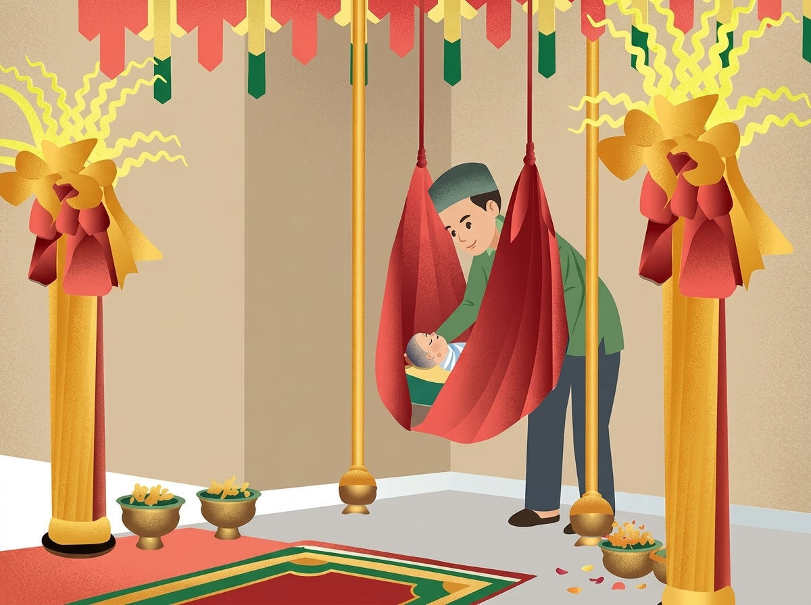
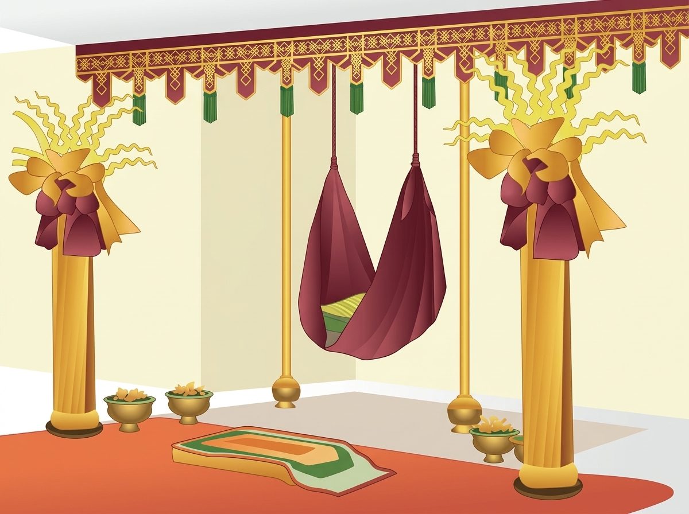
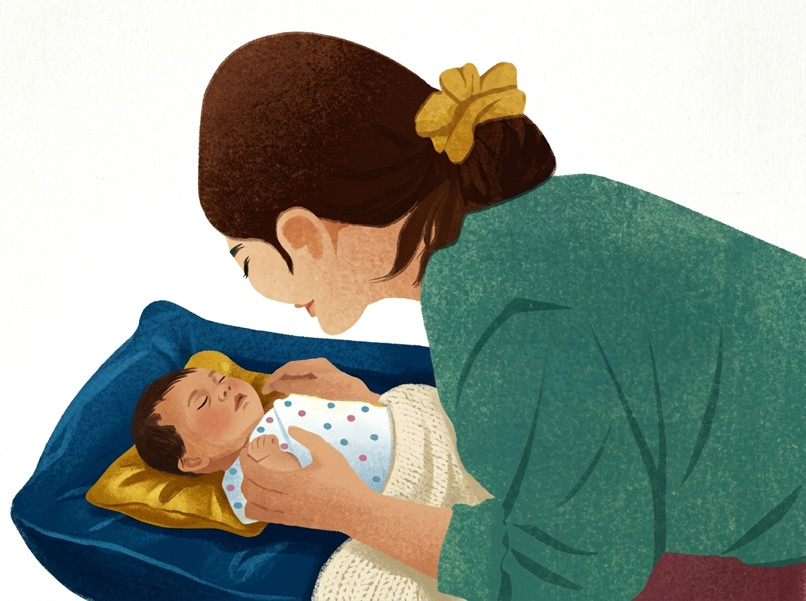
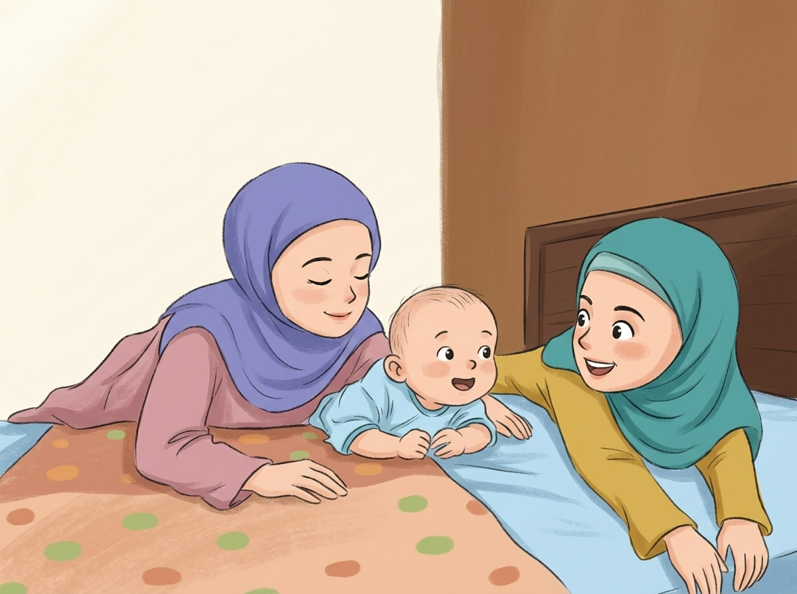

Acara emberi nama kahak ya baru lahir dalam adat urang Kutai disebut Naek Ayun. Tradisi ni simbol tanda besyukur atas kelahiran kahak, ngan tetap enjaga adat tradisi Naek Ayun. Urang Kutai endik hanya mewarisi adat leluhur, tapi jua embangun kekhasan budaya lokal.
Petunjuk kegiatan tidak dapat diputar, jadi materi dibuka otomatis. Tanyakan guru kalau petunjuk harus didengarkan.
1. Klik tombol Dengarkan Bacaan di bawah, lalu simak sambil mengikuti teks bacaannya dengan saksama!
Urang Kutai di Kalimantan Timur berempu bermacam ragam tradisi ngan adat ya kaya makna ngan sarat nilai budaya. Salah sebuting tradisi penting ya lestari sampai wayah ni adalah Naek Ayun, yaitu upacara adat ya diacarakan kan nyambut kelahiran sorang bayi. Tradisi ni enjadi simbul rasa syukur sekaligus harapan kan masa depan si kahak.

Naek Ayun biasanya diacarakan wayah bayi beumur antara 7 hingga 40 hari, tegantong kecocokan bilangan harinya ngan kesiapan acara. Kata "naek ayun" bearti menaekkan kahak ke ayunan, dalam budaya urang Kutai dipolah ngan acara khusus melibatkan doa-doa, simbol-simbol adat, makna agama, makna keilahian ngan ditulungi oleh masyarakat sekitar.

Upacara adat Naek Ayun endik hanya tanda besyukur atas kelahiran, tapi jua simbol diterimanya si kahak dalam keroan kehidupan sosial ngan adat. Inya enggambarkan hubungan baek antara manusia, alam, ngan leluhur, jua ni negaskan bahwa pentingnya nilai-nilai hidup betulungan dalam kehidupan urang Kutai.
Ngan tetap enjaga adat tradisi naek ayun, urang Kutai endik hanya mewarisi adat leluhur, tapi jua embangun kekhasan budaya lokal ya kuat pakai generasi kan datang sebagai identitas ya mesti terus hidup. Tradisi ni enjadi kekayaan budaya bangsa Indonesia ya patut dikenali, hormati ngan dihargai.

Daftar kosakata bahasa Kutai yang terdapat dalam teks materi Naek Ayun beserta padanannya dalam bahasa Indonesia:
| Kata (Bahasa Kutai) | Arti (Bahasa Indonesia) |
|---|---|
| berempu | mempunyai / memiliki |
| betulungan | gotong-royong / tolong-menolong |
| bungah | senang / gembira |
| diacarakan | diadakan / diselenggarakan |
| dipolah | dibuat |
| dituhakan | dituakan |
| embacakan | membacakan |
| embangun | membangun |
| embawa | membawa |
| emberi | memberi |
| endik | tidak |
| enjaga | menjaga |
| enjadi | menjadi |
| etuha | tua / pemuka |
| jua | juga |
| kahak | bayi / anak |
| kan | untuk / kepada |
| keroan | kerabat / keluarga |
| mehambur | menaburkan / menghamburkan |
| ngan | dengan / dan |
| ni | ini |
| nyambut | menyambut |
| rancak | sering |
| sebuting | sebuah / salah satu |
| sorang | seorang |
| tegantong | tergantung |
| tu | itu |
| umpat | ikut |
| urang | orang |
| wayah ni | saat ini / sekarang |
Audio bacaan tidak dapat diputar, jadi soal dibuka otomatis. Tanyakan guru kalau audio harus didengarkan.
2. Jawap hak petanyaan di bawah ni!